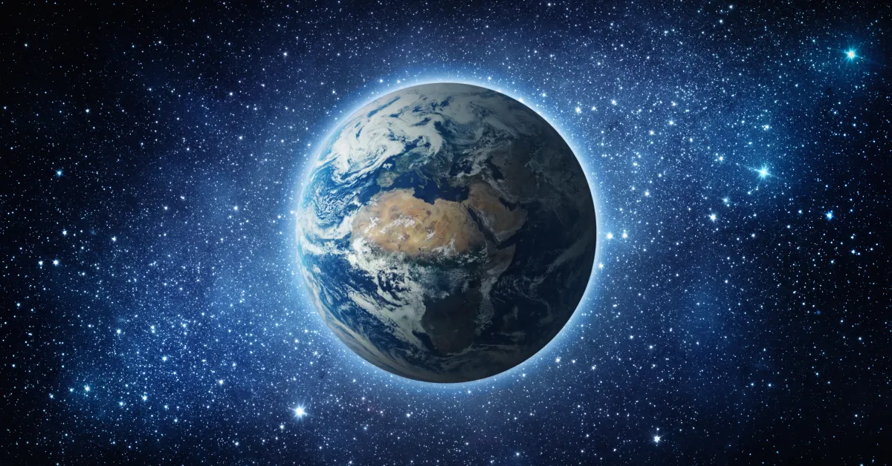

When viewed from space, Earth appears as a vibrant blue marble, dotted with swirling white clouds, where the blue
represents the vast oceans covering most of the planet, and the white signifies the fluffy cloud formations, with
patches of brown, green, and yellow representing landmasses, giving a striking visual of our planet suspended in the
inky blackness of space; it's often described as a breathtaking sight, making you acutely aware of the fragility and
interconnectedness of our home planet. From space, Earth appears as a blue marble with white swirls. It's also visible
as a tiny blue dot from other planets.

Appearance:
Earth appears round from space, but is actually an irregularly shaped ellipsoid.
From a distance, Earth looks like a bright blue star against a dark backdrop.
Earth's thin blue atmosphere is visible from space.
Earth's curvature is visible from space.
Cloud formations are visible from space.
The most prominent common aspects of personally experiencing the Earth from space are appreciation and perception of
beauty, unexpected and even overwhelming emotion, and an increased sense of connection to other people and the Earth
as a whole.
The geography of Earth is vast and diverse, encompassing continents, oceans, mountains, plains, deserts, and
forests. Earth is divided into seven continents Asia, Africa, North America, South America, Antarctica, Europe, and
Australia each with its own unique landscapes and climates. Additionally, the planet is surrounded by five major
oceans the Pacific, Atlantic, Indian, Southern, and Arctic which play a crucial role in regulating global climate and
supporting marine life.
One of the most fascinating aspects of Earth's geography is its varied landforms. Mountains such as the
Himalayas and the Andes are formed by tectonic movements, while plains and valleys are shaped by erosion and
deposition. Deserts like the Sahara experience extreme heat and dryness, whereas rainforests like the Amazon
receive abundant rainfall and support diverse ecosystems. The physical geography of different regions influences
climate, wildlife, and human activities.
Earth's climate is classified into different zones, including tropical, temperate, and polar regions. These zones
are determined by latitude, altitude, and proximity to water bodies. Tropical regions near the equator experience warm
temperatures and heavy rainfall, while temperate regions have moderate climates with distinct seasons. Polar regions,
such as Antarctica and the Arctic, remain cold throughout the year due to their location near the Earth's poles.
Another essential aspect of geography is the distribution of natural resources. Forests provide oxygen and raw
materials, rivers supply freshwater, and mineral deposits fuel industries and economies. However, human activities,
such as deforestation, mining, and pollution, have led to environmental challenges like climate change and habitat
destruction. Sustainable resource management is crucial to maintaining a healthy balance between human development
and environmental conservation.
In conclusion, Earth's geography is a dynamic system that influences all aspects of life. From towering mountains
to vast oceans, from hot deserts to freezing polar regions, every part of the planet plays a role in shaping climate,
ecosystems, and human civilization. Understanding geography helps us appreciate the planet's beauty, adapt to natural
changes, and work toward a sustainable future.
1. Oceanic Crust
The oceanic crust is the thinner, denser part of Earth's outermost layer, primarily made of basalt. It forms
the ocean floor and is constantly recycled through tectonic activity. Compared to the continental crust, it is
younger because it is continuously created at mid ocean ridges and destroyed in subduction zones.
2. Continental Crust
The continental crust is thicker and less dense than oceanic crust, mainly composed of granite. It forms the
landmasses where humans and other life exist. Unlike oceanic crust, it is much older, with some parts dating back
billions of years. The crust, both oceanic and continental, is a crucial part of the lithosphere.
3. Lithosphere
The lithosphere includes the crust and the rigid uppermost part of the mantle. It is divided into tectonic plates
that float on the semi-fluid asthenosphere below. The movement of these plates leads to geological activities such
as earthquakes, volcanic eruptions, and mountain formation.
4. Asthenosphere
Beneath the lithosphere, the asthenosphere is a semi-fluid layer of the mantle where rocks are partially molten.
This layer plays a key role in plate tectonics by allowing the rigid lithosphere to move. The slow convection currents
in the asthenosphere drive the motion of Earth's tectonic plates.
5. Upper Mantle
The upper mantle extends from the asthenosphere down to about 660 km beneath Earth's surface. It is composed of
solid rock but behaves plastically over long periods due to intense heat and pressure. This layer helps transfer heat
from Earth's interior towards the surface.
6. Lower Mantle
The lower mantle extends from around 660 km to 2,900 km deep. It is hotter and more rigid than the upper mantle
due to the immense pressure. The material here moves very slowly but still contributes to mantle convection, which affects
surface processes such as volcanic activity.
7. Outer Core
The outer core is a liquid layer made mostly of iron and nickel, extending from 2,900 km to 5,150 km beneath the
surface. Its movement generates Earth's magnetic field, which protects the planet from harmful solar radiation. This
layer is responsible for phenomena like the aurora borealis (Northern Lights).
8. Inner Core
At the very center of the Earth lies the inner core, a solid sphere composed of iron and nickel. Despite reaching
temperatures of up to 5,500°C (9,932°F), it remains solid due to the extreme pressure surrounding it. The inner core
is essential for Earth's geodynamo system, which helps maintain the planets magnetic field.
The surface of the Earth is a breathtaking masterpiece of nature, filled with diverse landscapes that captivate
the senses. Towering mountains, vast plains, rolling hills, and deep valleys create a stunning topography that has
been shaped over millions of years by natural forces such as erosion, volcanic activity, and tectonic movements. From
the majestic Himalayas to the expansive Amazon rainforest, each region of the planet holds unique beauty, showcasing
the wonders of Earth's geological evolution.
Water bodies add to the Earth's splendor, covering about 71% of the planet's surface. The deep blue oceans, shimmering
lakes, winding rivers, and thundering waterfalls not only provide essential resources but also enhance the scenic beauty
of the world. Coastal landscapes, with golden sandy beaches and rugged cliffs, create picturesque views where land meets
water in a mesmerizing display of natural harmony. Coral reefs beneath the oceans form vibrant underwater ecosystems,
teeming with marine life and dazzling colors.
The Earth's surface is also adorned with lush greenery, from dense tropical rainforests to vast grasslands.
These ecosystems are home to a wide variety of plants and animals, contributing to the planets biodiversity.
The changing seasons bring even more charm to the landscape—spring blankets fields with blooming flowers, autumn paints
forests in warm hues of red and orange, winter covers mountains with glistening snow, and summer brings golden sunshine
to the land.
Human civilization has also added to the beauty of Earth's surface, creating stunning cities, historical landmarks, and
cultural wonders. Architectural marvels like the Great Wall of China, the Pyramids of Egypt, and the Taj Mahal blend with
the natural world, reflecting humanitys creativity and connection with the environment. However, it is essential to preserve
and protect the Earth's surface from pollution and deforestation to maintain its beauty for future generations.
In conclusion, the surface of the Earth is a magnificent blend of land, water, and life, offering an endless variety
of natural wonders. From breathtaking landscapes to diverse ecosystems, the planets surface is a testament to the
incredible forces of nature. By appreciating and protecting this beauty, we ensure that Earth remains a vibrant and
thriving home for all living beings.